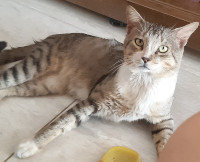

Este é meu gato. Ele está na família há quase 10 anos.

Este é o gatinho que vive na rua, mas sempre entra aqui em casa pra fazer uma boquinha. Nos visita há mais ou
menos 4 anos eu acho.
E este é meu gato de novo. Gostei da foto e quis mostrar também 🤭
Clicando aqui você será redirecionade
redirecionado(a) ☝ à página dos meus contatos.
A título de teste, clicando aqui você vai chegar numa página cujo link inserido nela levará à primeira página.